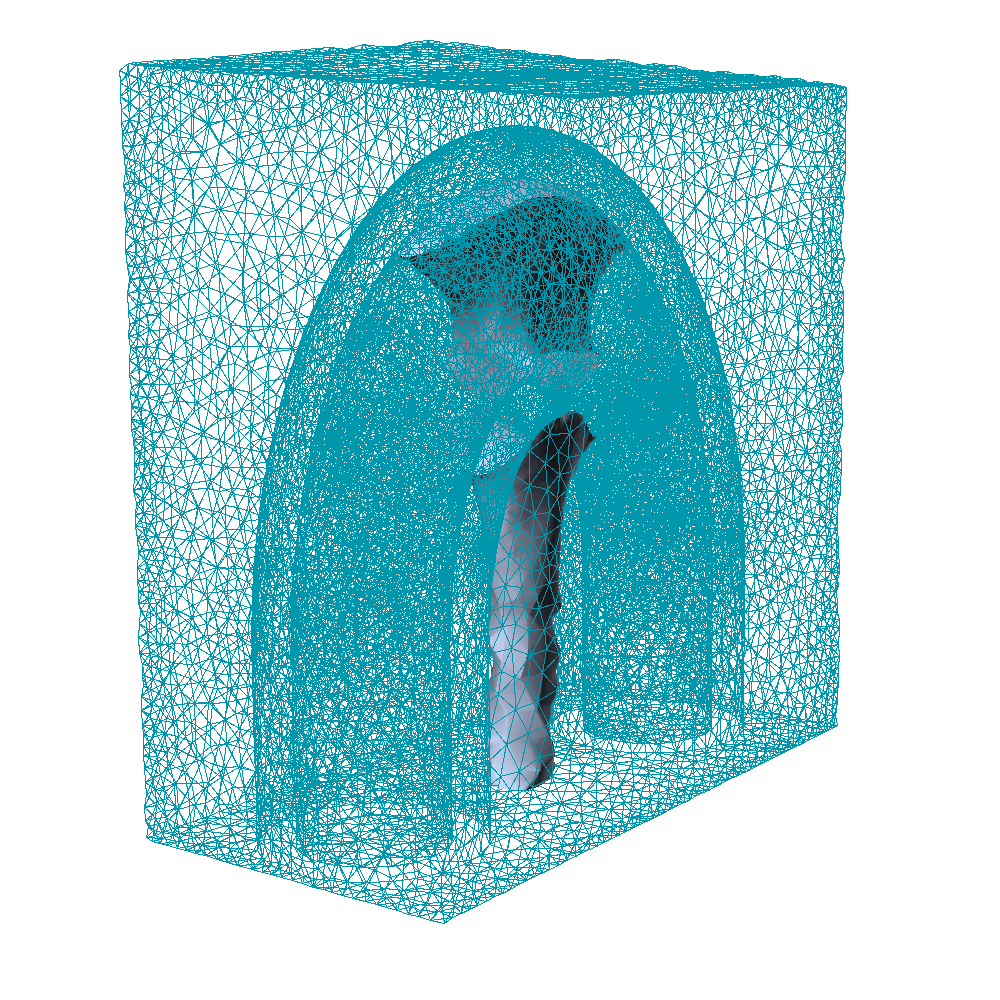
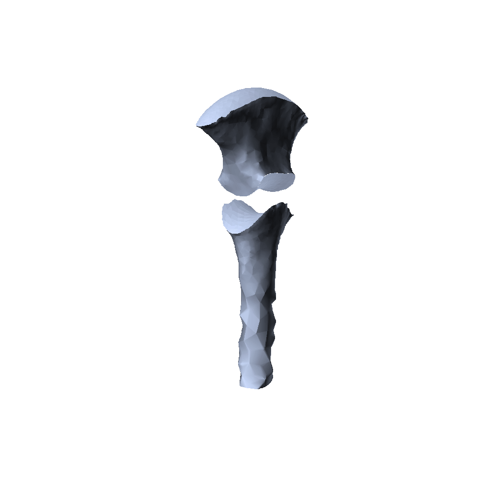
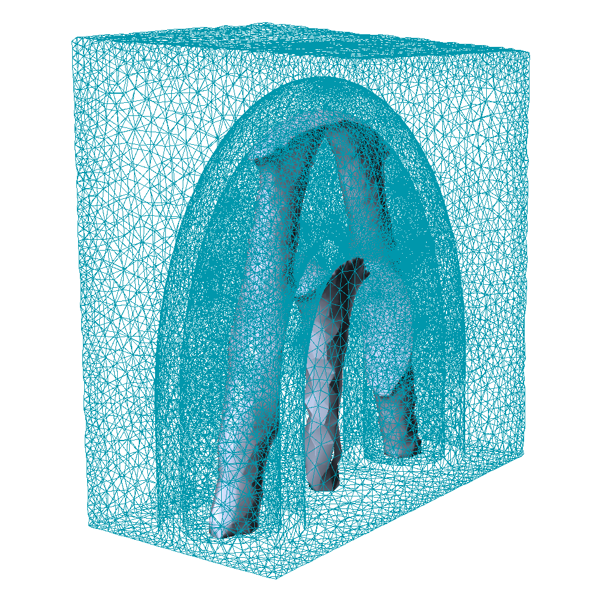
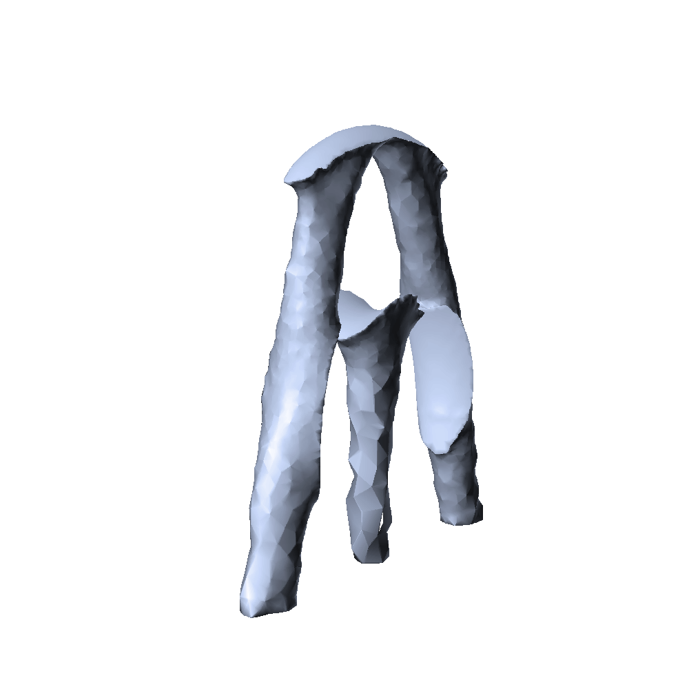
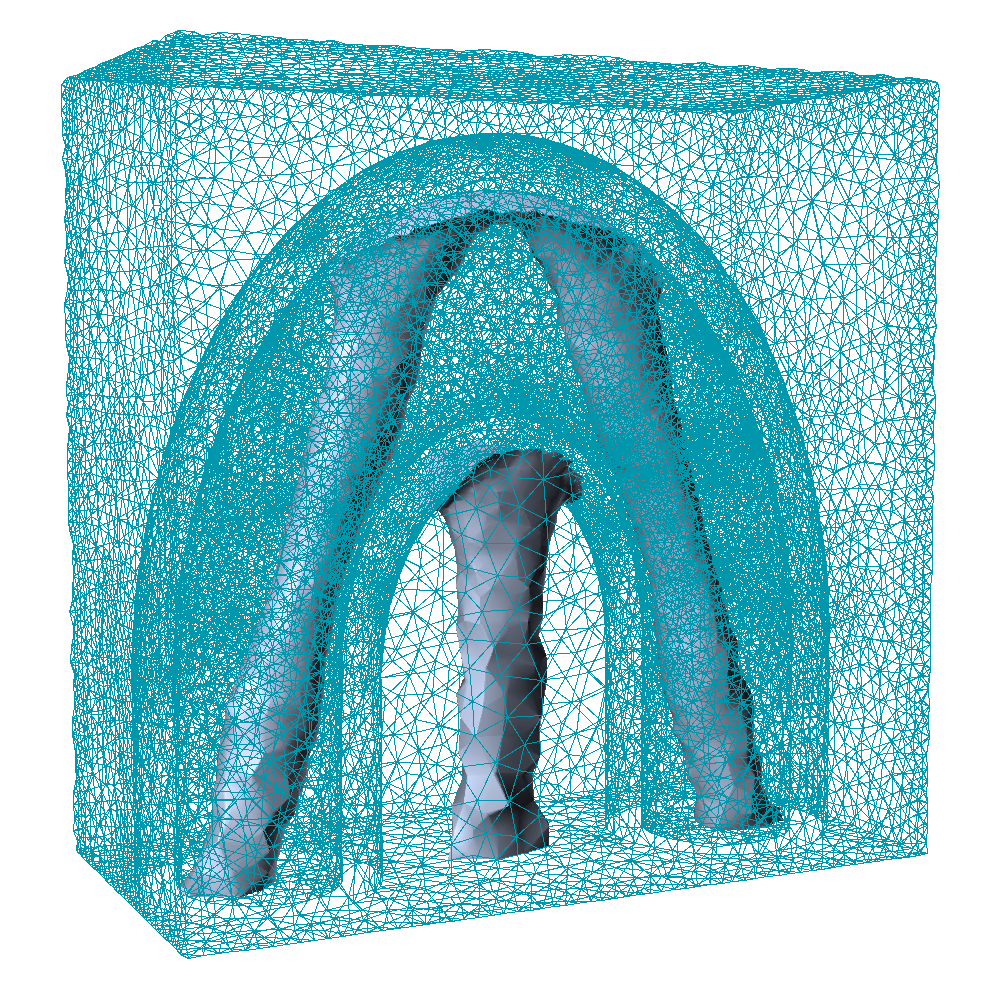
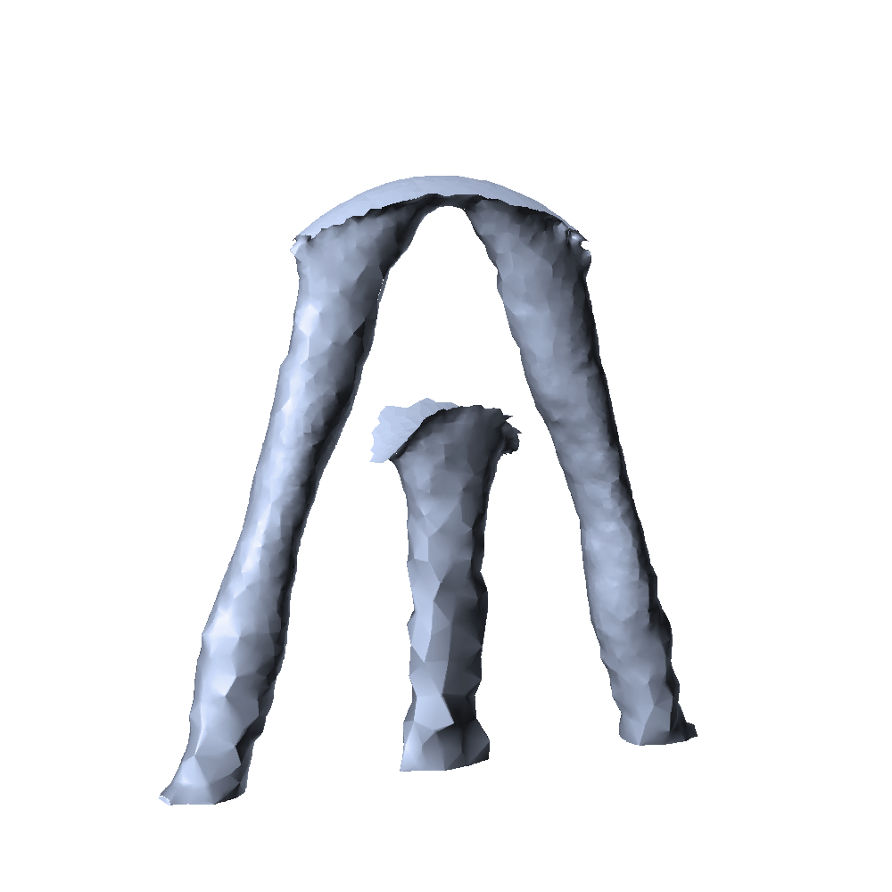
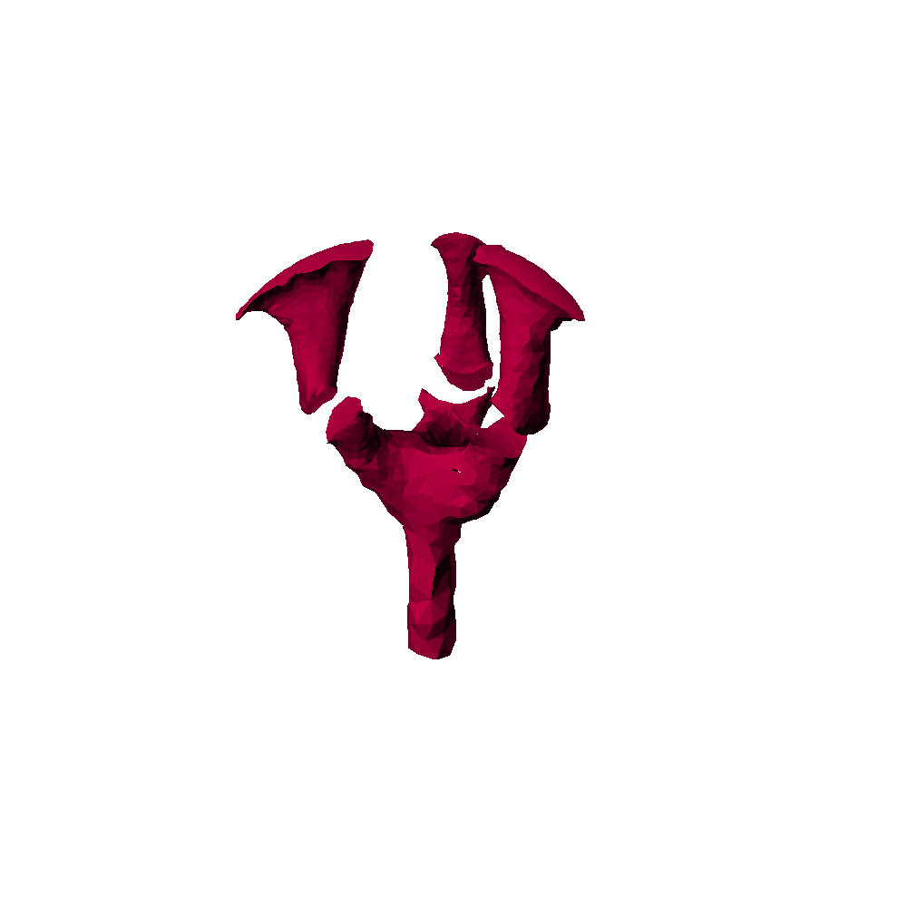
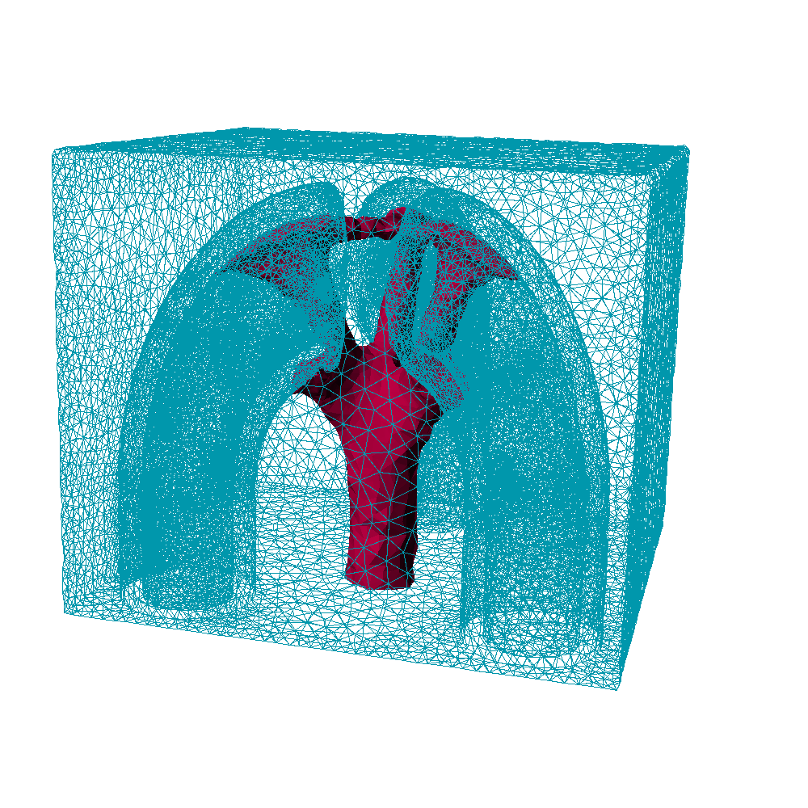
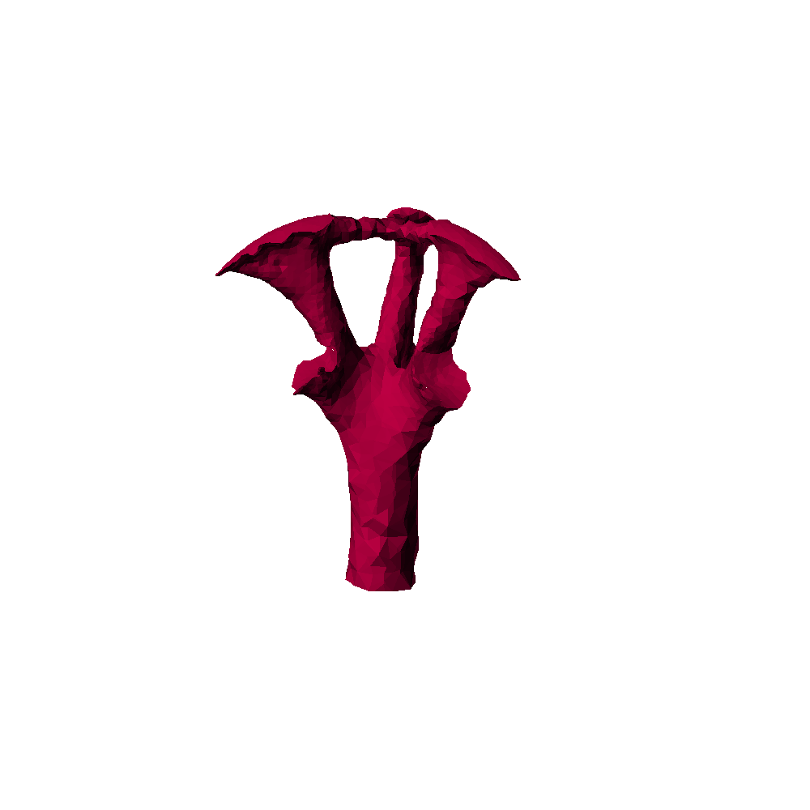

Beniamin BOGOSEL
Numerical data: The mesh, solution, and MAT files linked on this page are collected in one verified archive. Download the numerical data archive.
Optimization of Supports in Additive Manufacturing
This work is in collaboration with Grégoire Allaire and Martin Bihr.
This is a companion webpage for the article: Support optimization in additive manufacturing for geometric and thermo-mechanical constraints.
Below you will find a recap of the results shown in the paper together with most of the data required to redo the computations. For the geometric methods a triangulation of the surface of $\partial \omega$ is given. For the results of the topology optimization algorithms the mesh, parameters, initialization and final results are shown.
Geometric methods
Below are the files used in the optimization of the orientation using geometric criteria. These are Matlab .mat files containing a structure with fields (among others):
- "points": containing the coordinates of the points
- "t": containing the triangulation as indices in the points array
Shape and Topology Optimization
The images below are created with the software xd3d by François Jouve.
U-shaped Tube
|
  |
The support may touch the shape $\omega$ |
|
  |
Remove all Dirichlet conditions from $\partial\omega$: the support may still touch the shape |
|
  |
Remove all Dirichlet conditions from $\partial\omega$ and add penalization term. The support does not touch the part! |
Three half U-tubes
The objective here is to obtain common supports for the same shape, repeated three times.

 |
The support may touch the shape |
|
  |
Remove all Dirichlet conditions from $\partial\omega$: the support may still touch the shape |
Created: Sept 2019, Last modified: Sept 2019